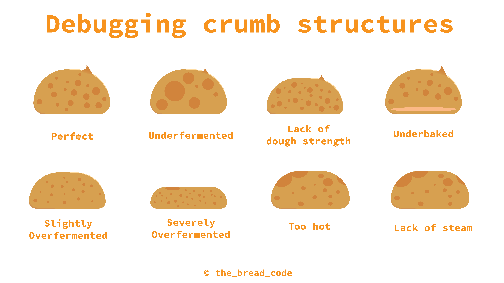
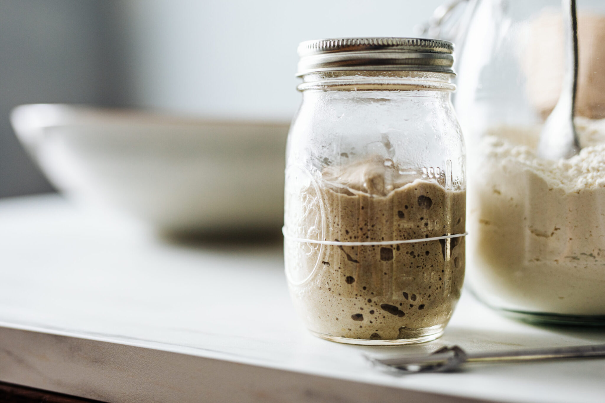

Fermentation: Sourdough
Learn about the science of fermentation by baking your own sourdough bread from scratch!
What is fermentation?
Fermentation is a metabolic process in which microorganisms like yeast and bacteria break down sugars into simpler compounds — most commonly alcohols, gases, and acids — in the absence of oxygen (anaerobic conditions). In sourdough, this natural fermentation gives bread its rise, texture, and complex tangy flavor.
There are two main types of fermentation involved in sourdough:
1. Alcoholic Fermentation (Yeast-driven):
Yeast (mostly *Saccharomyces cerevisiae* and wild strains) consume simple sugars and convert them into:
- Carbon dioxide (CO₂) — makes the dough rise
- Ethanol (alcohol) — evaporates during baking
2. Lactic Acid Fermentation (Bacteria-driven): Lactic acid bacteria (like *Lactobacillus*) feed on sugars and produce:
- Lactic acid — gives sourdough its signature tang
- Acetic acid — adds sharpness and complexity
What makes sourdough different?
Sourdough fermentation differs from commercial yeast fermentation in several ways:
- It uses wild yeast and natural bacteria from flour and the environment
- Fermentation takes longer (often 12–48 hours)
- Results in more digestible bread with improved shelf life and flavor complexity
Sourdough Bread
Sourdough bread is a living product of microbial fermentation. It starts with a starter culture — a mixture of flour and water allowed to ferment over time until it's bubbling and active.
A sourdough starter contains:
- Wild yeast (natural leavening agent)
- Lactic acid bacteria (flavor and structure)
- Enzymes (break down starches and proteins)
How to make sourdough bread
- Feed your starter: Combine equal parts flour and water into your sourdough starter and let it sit until bubbly and active (usually 4–8 hours).
- Mix the dough: Combine starter with flour, water, and salt. Mix until a rough dough forms.
- Bulk fermentation: Let the dough sit at room temperature for 4–6 hours, stretching and folding every 30 minutes to build gluten.
- Shape and proof: Shape the dough and place it in a floured proofing basket. Let it ferment for another few hours or overnight in the fridge.
- Bake: Score the dough, then bake it in a preheated Dutch oven at 450°F (230°C) for about 30–45 minutes until crusty and golden.

Observe the Chemistry
As your dough ferments and bakes, you’ll see the fermentation chemistry in action:
- CO₂ from yeast forms air pockets in the dough, giving sourdough its open crumb.
- Organic acids lower the pH, influencing texture, crust color, and shelf life.
- The crust undergoes Maillard reactions (thanks to low pH and sugars) and caramelization, giving sourdough its dark, blistered look and rich aroma.

Try It Yourself!
Make your own starter using just flour and water:
- Day 1: Mix 1/2 cup whole wheat flour + 1/4 cup water. Let sit uncovered for 24 hrs.
- Day 2–7: Each day, discard half, feed with fresh flour and water. Bubbles and rise = microbial activity!
- By Day 7, your starter should double in size after feeding and have a tangy aroma — it’s ready to use!

Fun Experiments
- Compare loaves made with long fermentation vs. short — longer times yield deeper flavor and softer texture.
- Change your flour types — rye flour often increases microbial activity due to higher nutrient content.
- Test ambient temperature — fermentation speeds up in warmth and slows in cold.